Project 1: Images of the Russian Empire
Reconstructing color photographs from Sergei Prokudin-Gorskii's early-1900s glass plate negatives, by aligning the separate red, green, and blue exposures of each scene using exhaustive search, a coarse-to-fine image pyramid, and a set of automatic post-processing steps to make the final colors look right.
Single-Scale Alignment
Exhaustive search alignment on the small JPEG images.


Code logic
Each glass plate is split into three equal horizontal strips — B, G, R, top to bottom. To align G and R onto B, I exhaustively try every integer displacement (dx, dy) in a fixed window and score how well the shifted channel overlaps B using NCC: I mean-subtract both images, then take the normalized dot product between them. The displacement with the highest NCC score is kept.
def ncc(im1, im2):
a = im1 - im1.mean()
b = im2 - im2.mean()
return np.sum(a * b) / (np.linalg.norm(a) * np.linalg.norm(b) + 1e-8)Pyramid Alignment
Coarse-to-fine alignment on all of the provided high-resolution glass plate scans.


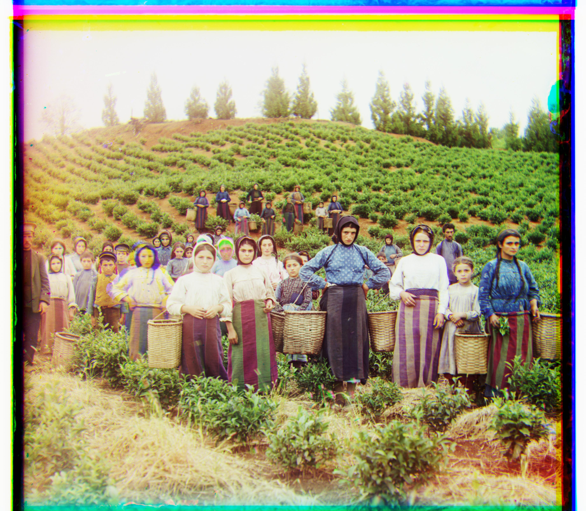
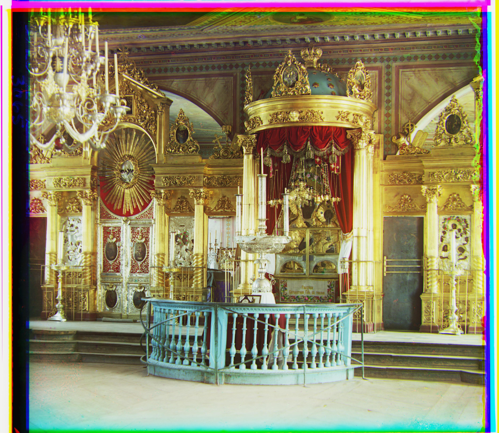
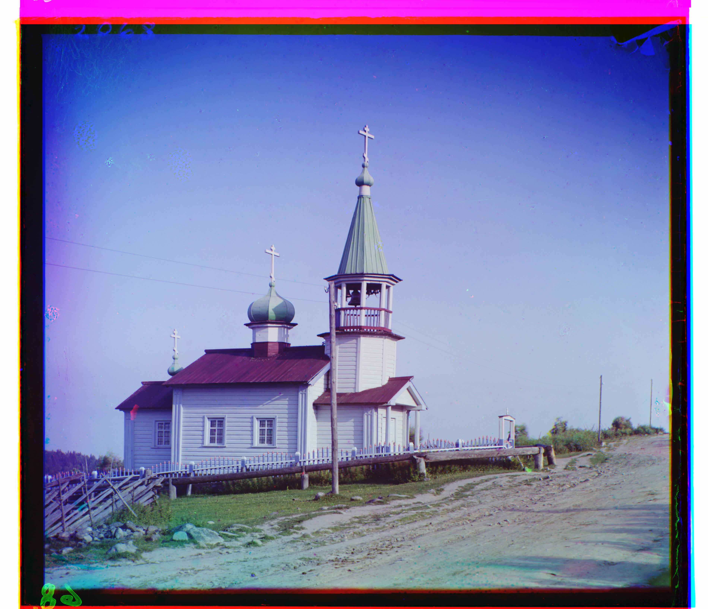
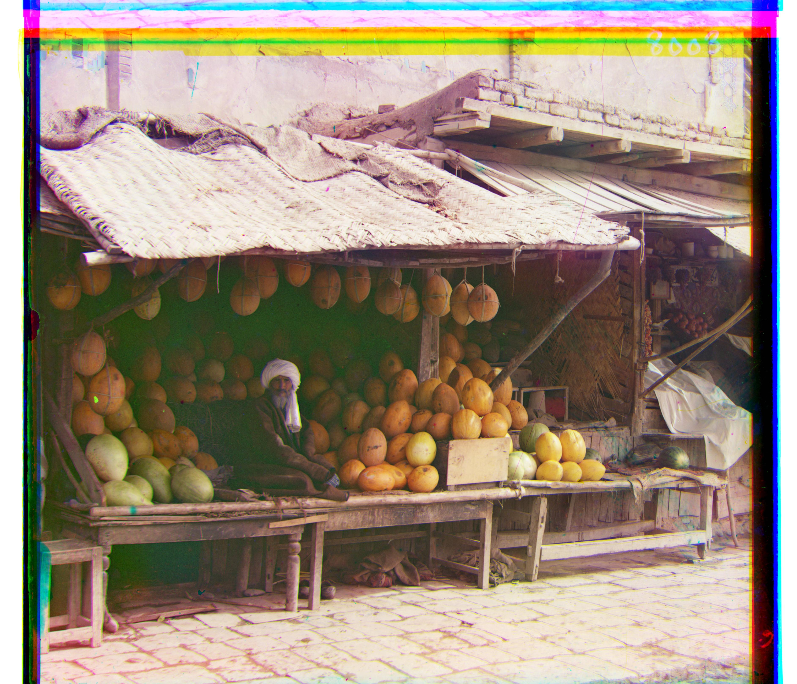

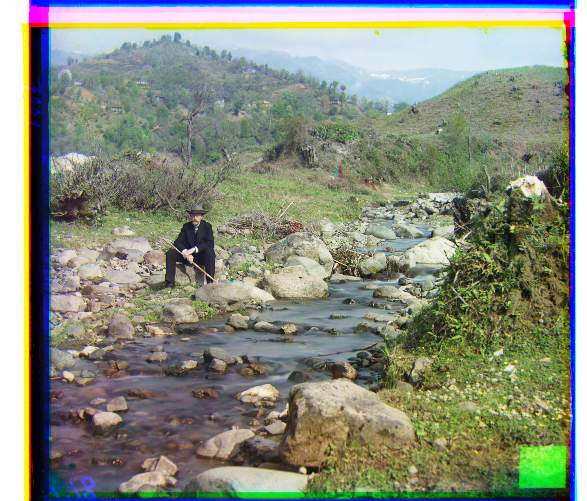

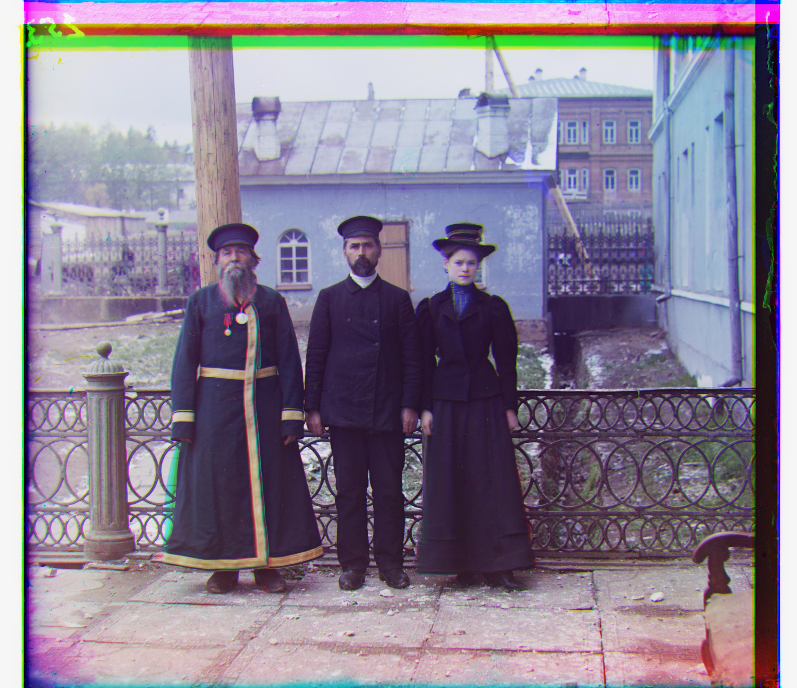

Code logic
Exhaustive search alone is far too slow on the full-resolution .tif scans, so large images use a coarse-to-fine image pyramid instead. The image is recursively downsampled by half until it's small enough for exhaustive search. Coming back up each level, the previous level's best displacement is doubled to match the new resolution, then refined with a small local search rather than searched from scratch — this is what makes it fast even on huge images.
def align_pyramid(img, ref, window=15, metric=ncc, min_size=200, refine_radius=4):
h, w = img.shape[:2]
if max(h, w) <= min_size:
return align_single_scale(img, ref, window=window, metric=metric)
small_img = transform.rescale(img, 0.5, anti_aliasing=True)
small_ref = transform.rescale(ref, 0.5, anti_aliasing=True)
dx, dy = align_pyramid(small_img, small_ref, window=window,
metric=metric, min_size=min_size,
refine_radius=refine_radius)
dx, dy = dx * 2, dy * 2 # scale the estimate up to this resolution
# refine locally around the scaled-up estimate
best_score = -np.inf
best_shift = (dx, dy)
ref_c = crop_border(ref)
for ddx in range(-refine_radius, refine_radius + 1):
for ddy in range(-refine_radius, refine_radius + 1):
shifted = np.roll(np.roll(img, dx + ddx, axis=1), dy + ddy, axis=0)
score = metric(crop_border(shifted), ref_c)
if score > best_score:
best_score = score
best_shift = (dx + ddx, dy + ddy)
return best_shift
For emir.tif specifically, this same function is called with use_edges=True,
a wider window, and a wider refine_radius — see the Failure
cases note below and the Better Features write-up further down for why.
Failure cases
emir.tif initially failed to align using raw-pixel NCC/L2. The scene's blue and pink robes are very bright in some channels but dark in others, so the metric latched onto a displacement where the brightness patterns happened to line up by coincidence, rather than the true structural alignment — producing a heavily ghosted result. It was fixed by scoring alignment on Sobel edge maps instead of raw pixel values, along with a wider search window and refinement radius to give the pyramid more room to correct a bad coarse-level guess. See the Better Features write-up below for details.
My Own Examples
3+ additional images from the Prokudin-Gorskii collection.
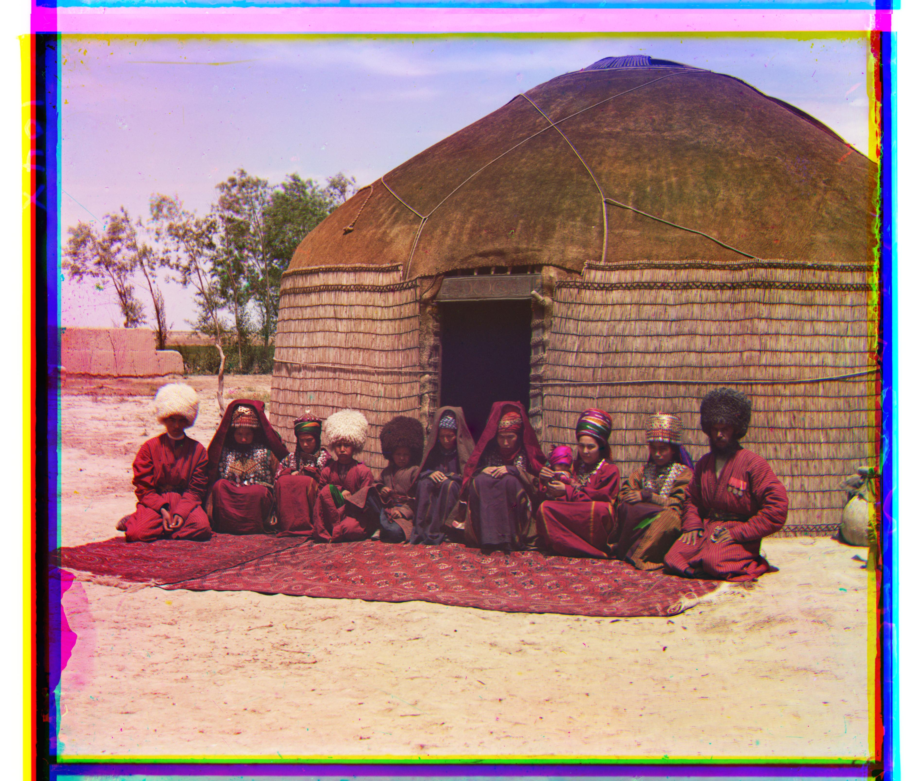
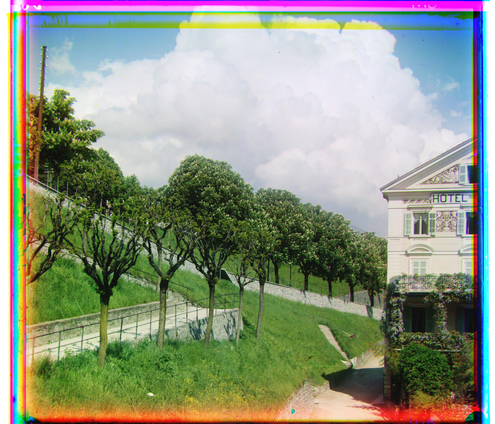
Code logic
These three images ran through the exact same pipeline as the provided collection — pyramid alignment with NCC scoring, no special-casing — to confirm the algorithm generalizes beyond the given test set rather than being tuned to it. The displacement magnitudes here are in the same rough range as the provided high-resolution scans, which is a reasonable sanity check that the alignment converged correctly.
Bells & Whistles
Each item below shows a before/after comparison, the motivation and approach, and the code.
Automatic Cropping
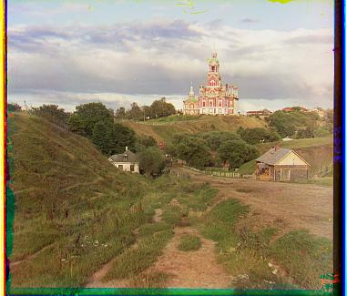
Approach
Rather than cropping a fixed percentage off every side, I scan inward from each edge and measure the standard deviation of brightness across each row and column. A genuine content row has real variation; a border row (black, white, or a flat colored strip) is nearly uniform. I trim rows/columns until I hit real content, capping how far in the scan is allowed to go so a uniform area in the middle of a real photo (like a plain sky) never gets eaten away. This alone doesn't catch the wraparound strip left behind by circular-shifting the channels during alignment, so I crop that separately first, using the known displacement, before running this scan for any remaining genuine scan border.
def auto_crop_from_shifts(img, g_shift, r_shift, extra_margin=2):
"""Crop away the border strip that becomes invalid after aligning
channels with a circular shift (np.roll wraps content from the far
edge around to fill the gap)."""
h, w = img.shape[:2]
dxs = [g_shift[0], r_shift[0]]
dys = [g_shift[1], r_shift[1]]
left = max(0, max(dxs)) + extra_margin
right = max(0, -min(dxs)) + extra_margin
top = max(0, max(dys)) + extra_margin
bottom = max(0, -min(dys)) + extra_margin
return img[top:h - bottom, left:w - right]Automatic Contrasting
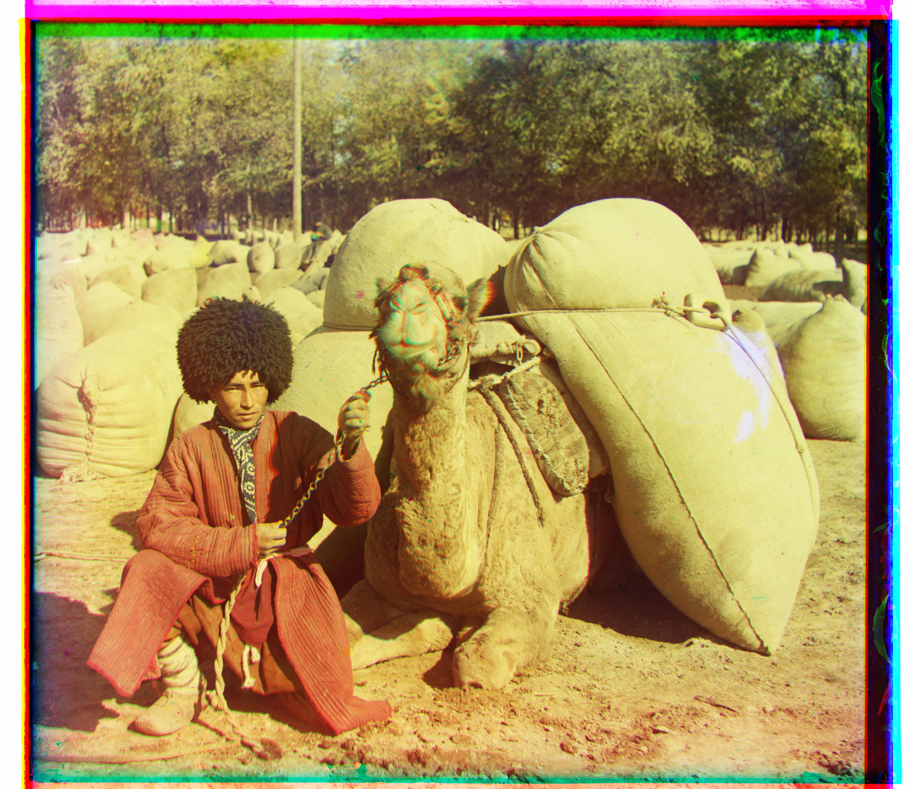
Approach
For each channel, I rescale so the 1st percentile brightness maps to 0 and the 99th percentile maps to 1, rather than using the literal min/max. Using percentiles instead of true extremes makes the stretch robust to a handful of stray dust specks or scratches on the glass plate, which would otherwise compress the contrast of the rest of the image.
def auto_contrast(img, low_pct=1, high_pct=99):
out = np.zeros_like(img)
for c in range(img.shape[2]):
lo, hi = np.percentile(img[:, :, c], [low_pct, high_pct])
out[:, :, c] = np.clip((img[:, :, c] - lo) / (hi - lo + 1e-8), 0, 1)
return outAutomatic White Balance
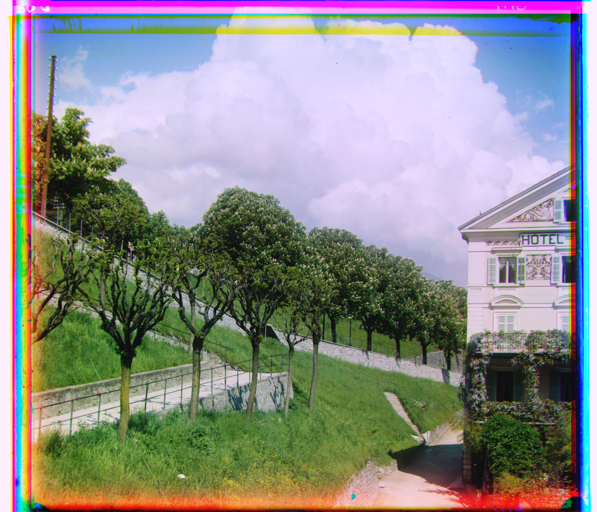
Approach
I used the gray-world assumption: on average, a natural scene's colors should balance out to neutral gray. I compute the mean brightness of each of the R, G, B channels, then scale each channel so its mean matches the overall gray-level mean. This cancels out a consistent color cast without needing to identify a specific "white" object in the scene.
def auto_white_balance(img):
means = img.reshape(-1, img.shape[2]).mean(axis=0)
gray_mean = means.mean()
gains = gray_mean / (means + 1e-8)
return np.clip(img * gains, 0, 1)Better Color Mapping
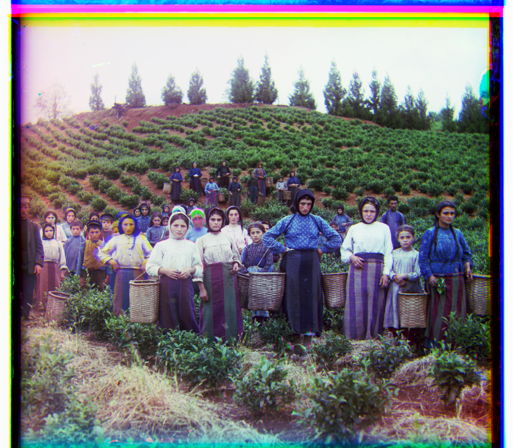
Approach
Instead of assuming the B, G, R glass plate exposures already share the same brightness distribution before stacking them into a color image, I used histogram matching to remap the G and R channels' brightness distributions to match B's. This corrects for the fact that Prokudin-Gorskii's red and green filters didn't necessarily respond with the same overall tonal curve as the blue filter — there's no reason the three plates should already agree on brightness statistics. This isn't the only valid approach; I'd also be curious to try searching over per-channel gain weights directly.
def match_color_mapping(r, g, b):
"""Match the R and G channel histograms to B's, instead of assuming
they already share the same brightness distribution."""
from skimage import exposure
g_matched = exposure.match_histograms(g, b)
r_matched = exposure.match_histograms(r, b)
return r_matched, g_matched, bBetter Features (Edge/Gradient-Based Alignment)
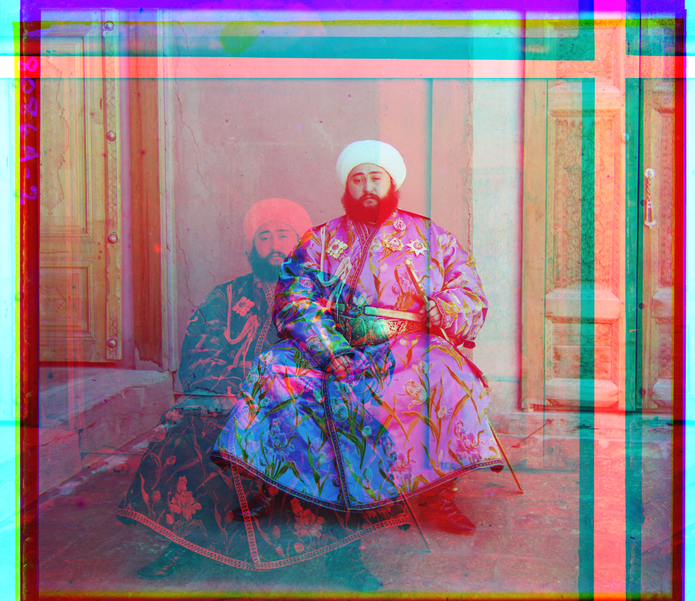
Approach
For emir.tif, I replaced raw-pixel comparison with Sobel edge maps: I compute the gradient magnitude of each channel first, then run NCC/L2 on those edge maps instead of the original pixel values. Edge maps capture where the outlines and boundaries of objects are, which is consistent across channels even when their brightness patterns differ a lot — exactly emir.tif's problem, where the same robe is bright in one channel and dark in another.
def sobel_edges(img):
dx = ndimage.sobel(img, axis=1)
dy = ndimage.sobel(img, axis=0)
return np.hypot(dx, dy)
# used inside align_single_scale / align_pyramid:
# if use_edges: score on sobel_edges(shifted) vs sobel_edges(ref)
# instead of the raw pixel valuesFull Gallery — Before / After
Drag each slider to compare the plain aligned result against the final version with all Bells & Whistles applied.
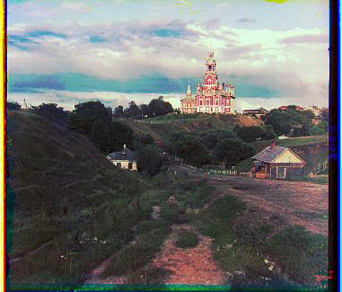
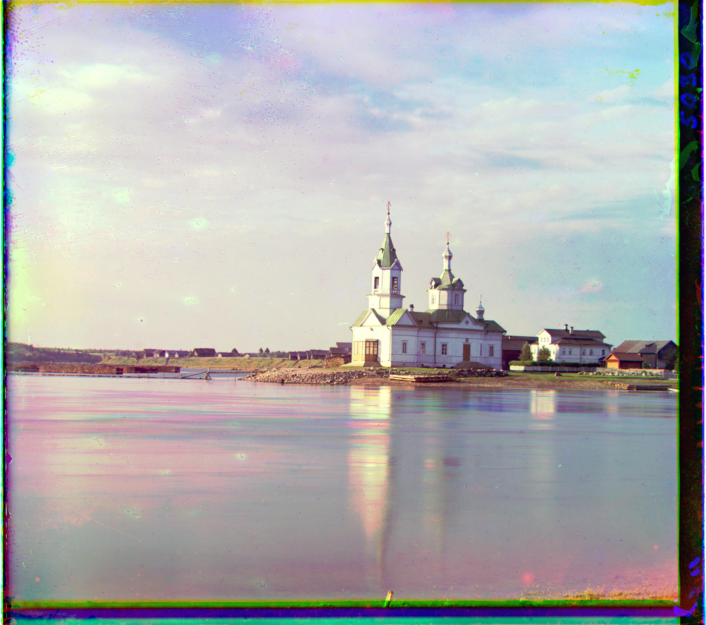
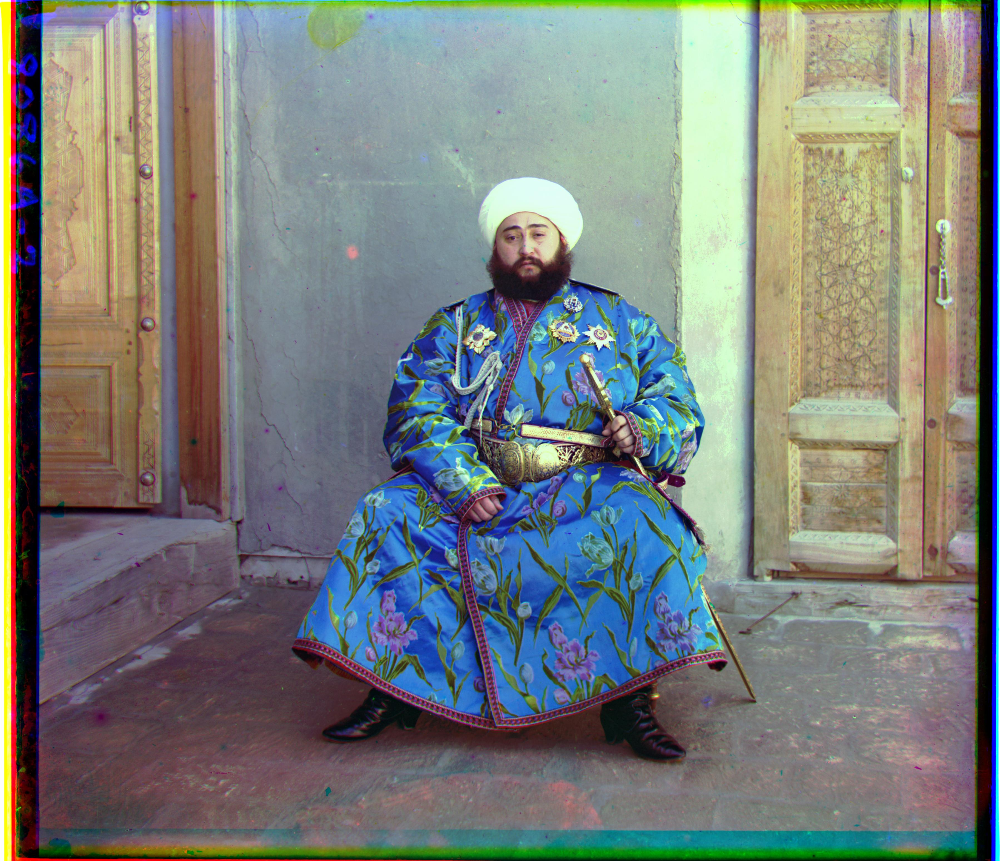
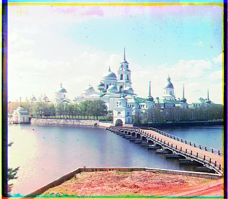
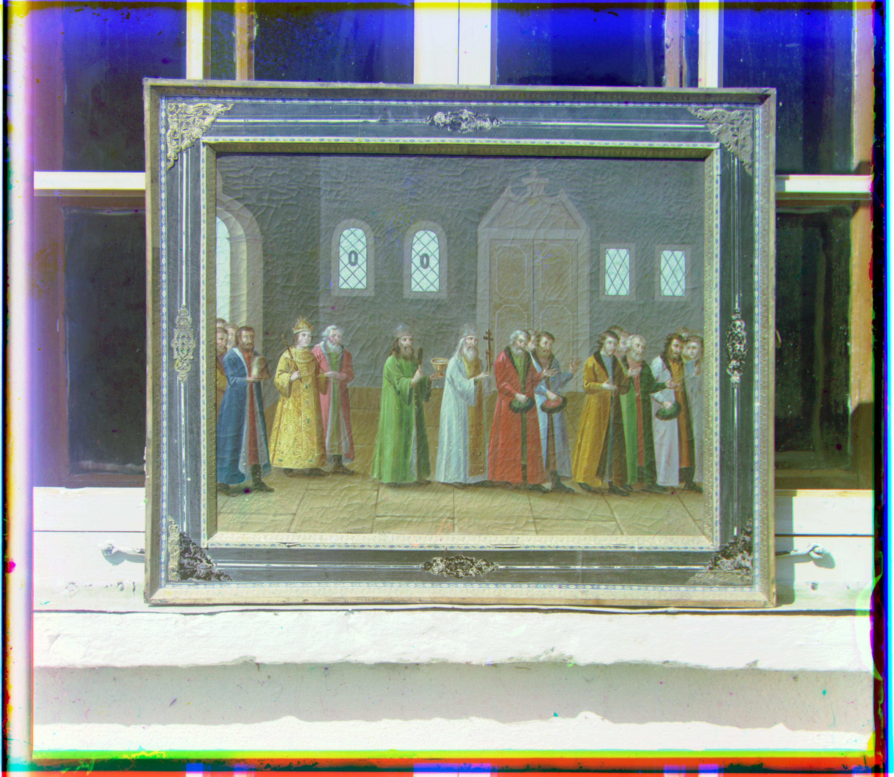
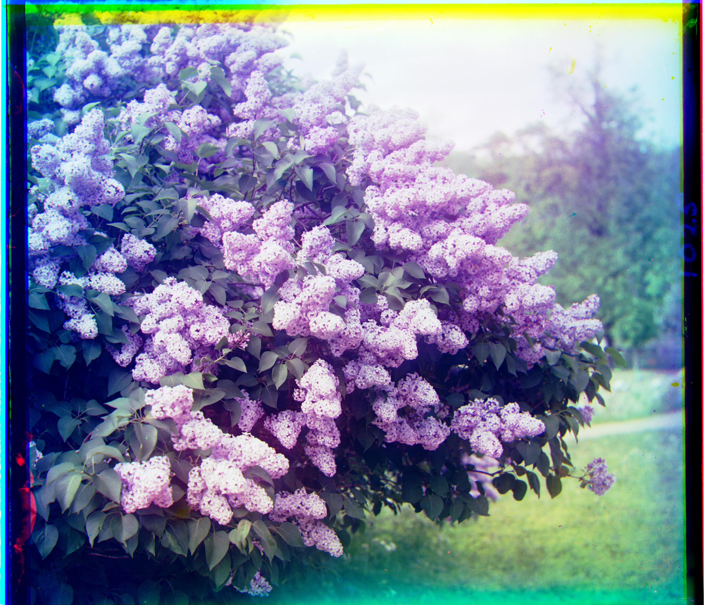
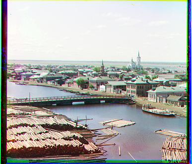
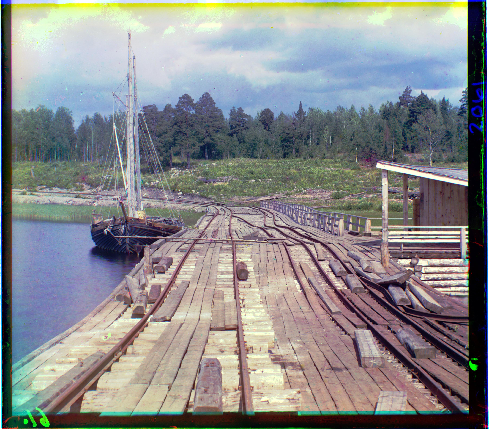
Code logic
"Before" is the plain aligned image straight out of the pyramid/single-scale pipeline, with no Bells & Whistles applied. "After" runs the same aligned channels through all four post-processing steps in order — histogram-based color mapping (applied before alignment, on the separate channels), then white balance, contrast stretching, and finally cropping (applied after the channels are stacked into one image). The slider itself is an overflow-hidden container whose width is driven by the range input, with the "after" image sized to the slider's full pixel width — so no image is ever actually resized, only how much of it is revealed changes.
Reflection
The core alignment algorithm — exhaustive search plus an image pyramid — worked well on most of the collection right away, but emir.tif was a good reminder that "align by pixel similarity" quietly assumes the channels agree on brightness, which isn't always true. Debugging it took a few layers: first confirming the displacement search was even finding a reasonable answer, then widening the pyramid's refinement radius so a bad coarse-level guess could still be corrected, and finally switching to edge-based scoring so brightness mismatches stopped misleading the metric altogether. The Bells & Whistles ended up compounding nicely — better color mapping and white balance made the final images look far more like real photographs than the raw channel stack ever could, and automatic cropping cleaned up the fringing at the edges where the three channels don't perfectly overlap after alignment.